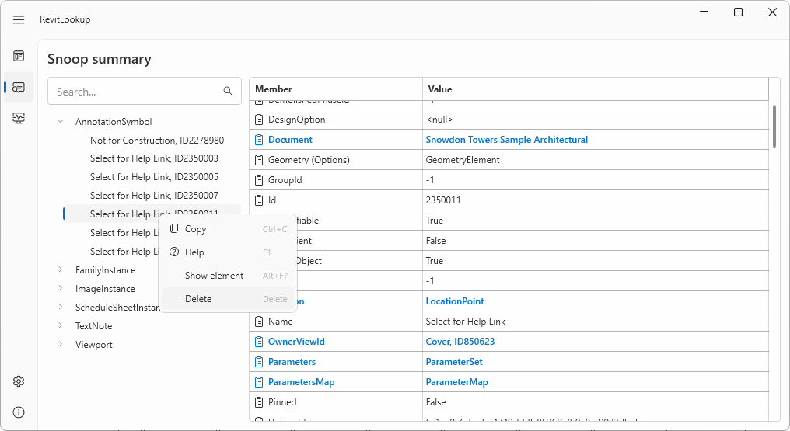
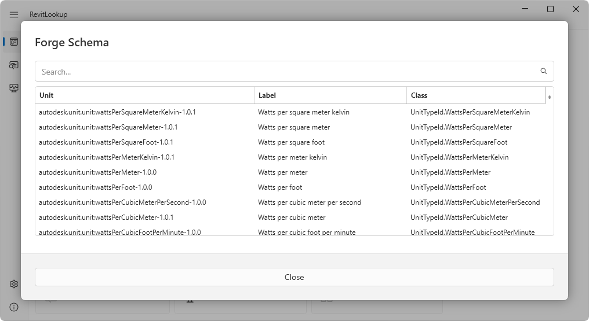

RevitLinkType.IsLoaded support by @SergeyNefyodov in #208LocationCurve.ElementsAtJoin support by @SergeyNefyodov in #205LocationCurve.JoinType support by @SergeyNefyodov in #205Revit 2025 has been released, and the new Revit API is now based on .NET Core:
Revit 2025 has been released.
The Factory blog post on What’s New in Revit 2025 describes the enhancements.
A quick overview is provided by the official nine-minute video on What's new in Revit 2025 by Autodesk Building Solutions:
Revit 2025 offers new capabilities and enhancements for site design and toposolids, upgrades for modeling and documenting concrete and steel design, in addition to new features for sustainability and carbon analysis, structural analysis, and MEP analysis and fabrication. There are many community ideas realized in Revit 2025, among them sheet collections which benefit efficiency for everyone documenting in Revit, single element and empty arrays for modeling families, and wall joins which improve the experience of placing and manipulating walls, making it more predictable and less prone to error. There’s also more connectivity to Autodesk Docs, improvements for openBIM workflows and data exchange, and other project management upgrades and schema improvements.
As expected, the Revit 2025 API is now based on the more modern .NET Core, replacing the previous .NET 4.8 framework required in the previous version, cf. previous discussions of the topic:
Some illuminating aspects of how to gracefully handle different dependency version requirements are discussed in the RevitLookup issue #210. The main point is made by Roman @Nice3point Karpovich, aka Роман Карпович:
You can support different versions like this;
<represents a<symbol in XML:
<PackageReference Include="Microsoft.Extensions.Hosting" Version="8.*" Condition="$(RevitVersion) == '2025'"/>
<PackageReference Include="Microsoft.Extensions.Hosting" Version="7.*" Condition="$(RevitVersion) != '' And $(RevitVersion) < '2025'"/>
As soon as Revit 2025 was available, Roman immediately published RevitLookup 2025 supporting the new release of Revit as well as sporting other significant enhancements:
RevitLinkType.IsLoaded support by @SergeyNefyodov in #208LocationCurve.ElementsAtJoin support by @SergeyNefyodov in #205LocationCurve.JoinType support by @SergeyNefyodov in #205Many thanks to Roman for his continuous tremendous work maintaining and improving RevitLookup!
In addition to the new release of RevitLookup, Roman published a Revit developer starter including
For full details, please refer to the Revit developer starter discussion page.
Thanks for this as well, Roman!
In case you prefer working with macros instead of a full-fledged add-in, Luiz Henrique @ricaun Cassettari shared a solution enabling the use of Visual Studio 2022 for Macros in Revit 2025 in the Revit API discussion forum thread on Revit 2025 Macro Manager and Visual Studio 2022.
Many thanks for this helpful hint, Ricaun!
We may see a much cheaper AI chip based on older technology coming along, according to Tom's Hardware, saying that Chinese chipmaker launches 14nm AI processor that's 90% cheaper than GPUs – $140 chip's older node sidesteps US sanctions.